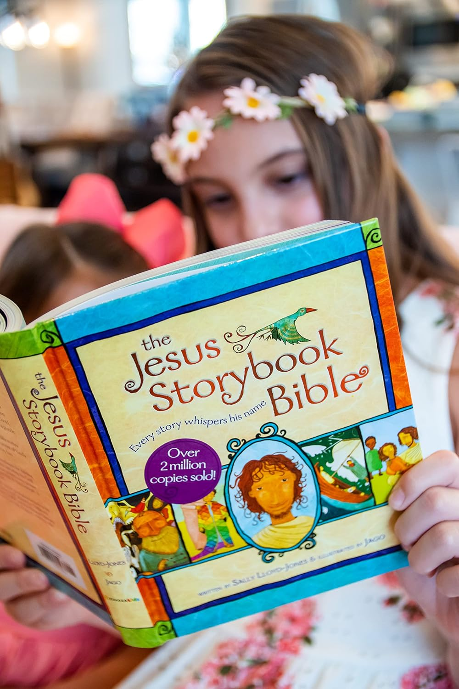
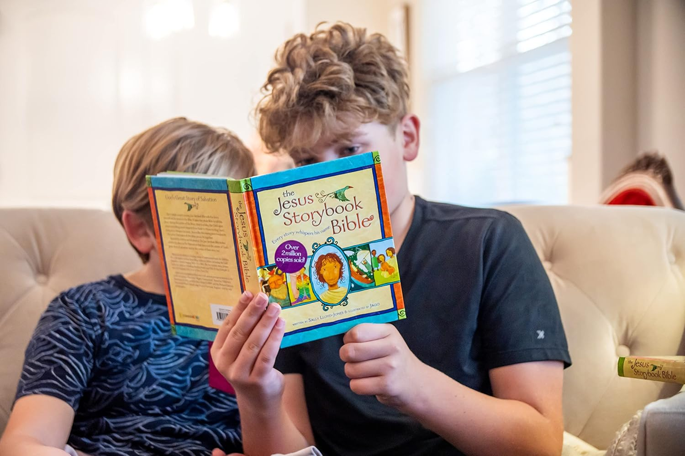
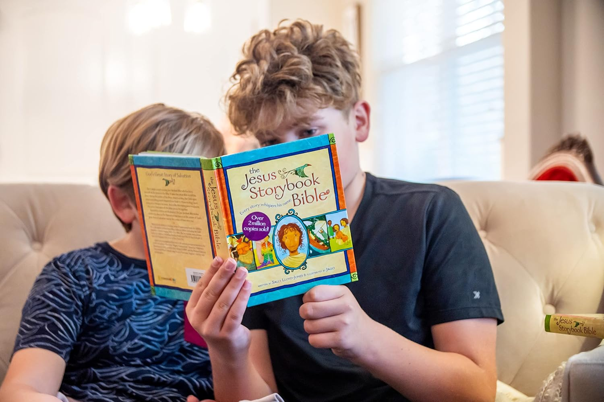
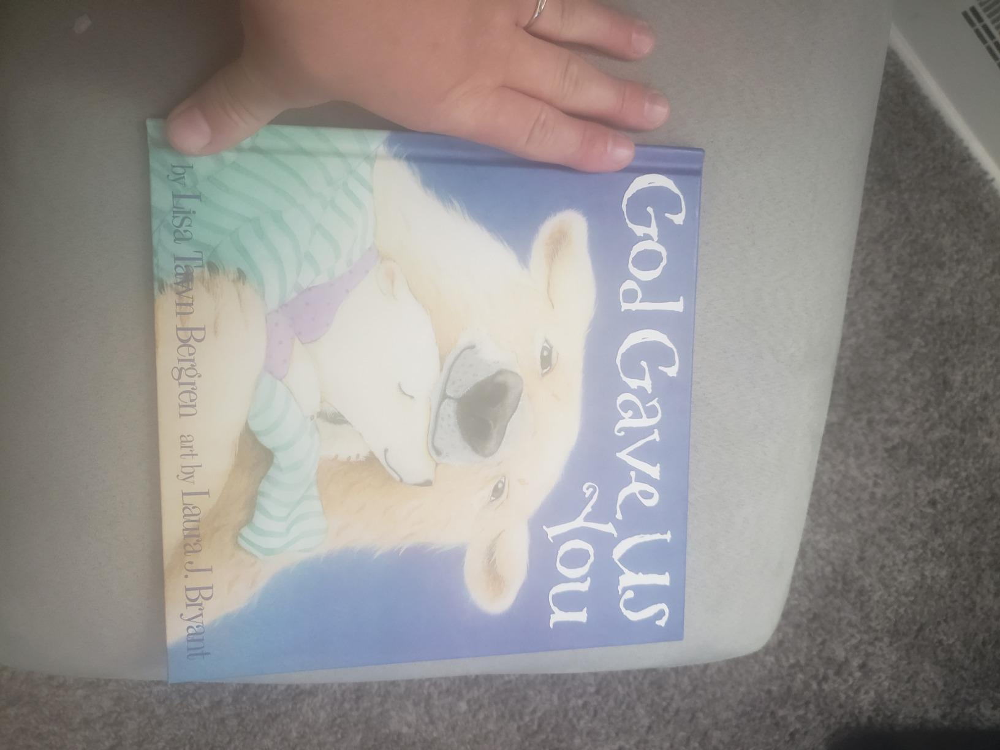
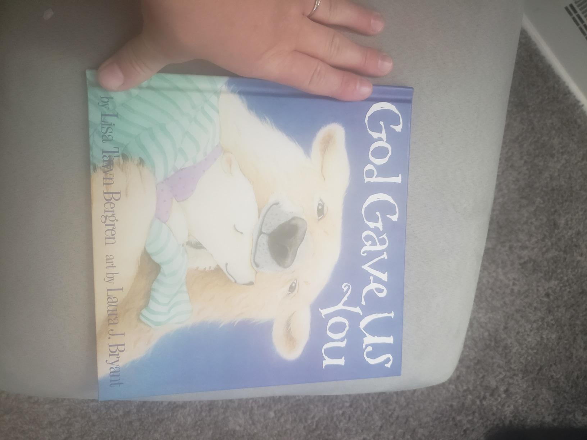
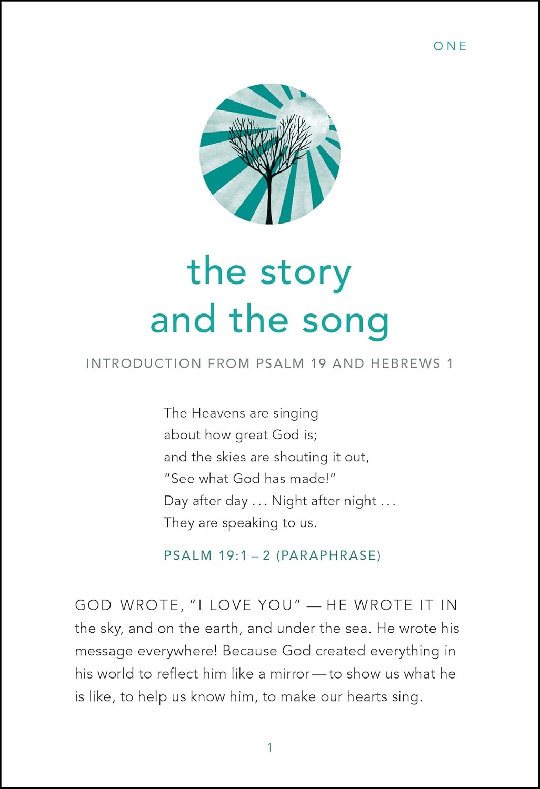

Book List
-

 
The Jesus Storybook Bible

The Jesus Storybook BibleThis beautifully illustrated book introduces children to the narrative of the Bible, showing how every story whispers Jesus' name. A meaningful way for kids aged 4-8 to understand God's love and redemption.
Age Range: 4-8 years | Themes: Redemption, God's Love
Buy on Amazon -
 
God Gave Us You

God Gave Us YouCelebrate the special bond between parent and child in this tender story. A perfect bedtime read for children aged 2-6, reminding them they are a precious gift from God.
Age Range: 2-6 years | Themes: Family, God's Plan
Buy on Amazon -

 The Biggest Story ABC
The Biggest Story ABCA colorful and creative book teaching kids the Bible's story through the alphabet. Each letter represents a key event in God's grand narrative, accompanied by vibrant illustrations and playful rhymes.
Age Range: 4-8 years | Themes: Bible Stories, Alphabet Learning
Buy on Amazon -
Found: Psalm 23
A comforting retelling of Psalm 23, this book brings peace and joy to children as they learn about God’s care and love.
Age Range: 4-7 years | Themes: Trust, God’s Care
Buy on Amazon -
Indescribable
A devotional bridging faith and science, inspiring awe in kids about God’s creation. Perfect for curious young minds.
Age Range: 8-12 years | Themes: Creation, Science, Faith
Buy on Amazon -
Love Letters from God
This unique book includes a love letter from God on each page, reminding children of His deep and personal love for them.
Age Range: 6-10 years | Themes: God’s Love, Encouragement
Buy on Amazon -
Thoughts to Make Your Heart Sing
Short and powerful devotions for kids, written in a way to inspire them about God's love and presence in their lives.
-
The Garden, the Curtain, and the Cross
This book retells the Gospel in a way that is simple and accessible for young children, focusing on how Jesus’ work on the cross changes everything.
-
The Biggest Story
An engaging retelling of the overarching story of the Bible, showing kids how all of Scripture points to Jesus and God’s grand redemption plan.
-
 The Story of God's Love for You
The Story of God's Love for YouA beautifully written narrative that traces God’s love throughout the Bible, designed for children to understand His plan of redemption and grace.